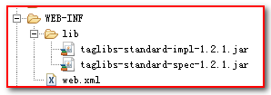

JSP为我们提供了可以自定义标签库(Tag Library)的功能，用来替代代码脚本,Sun公司又定义了一套通用的标签库名为JSTL(JSP Standard Tag Library)，里面定义很多我们开发中常用的方法
1.先引入JSTL标签库的jar包类库到WEB-INF/lib目录下

2.使用taglib指令导入需要的标签库
CORE 标签库
<%@ taglib prefix="c" uri="http://java.sun.com/jsp/jstl/core" %>
XML 标签库
<%@ taglib prefix="x" uri="http://java.sun.com/jsp/jstl/xml" %>
FMT 标签库
<%@ taglib prefix="fmt" uri="http://java.sun.com/jsp/jstl/fmt" %>
SQL 标签库
<%@ taglib prefix="sql" uri="http://java.sun.com/jsp/jstl/sql" %>
FUNCTIONS 标签库
<%@ taglib prefix="fn" uri="http://java.sun.com/jsp/jstl/functions" %>3.使用JSTL
如：
即：调用前缀为c的标签的out方法，向页面中输出value属性中的字符串。
作用：<c:out>用于计算一个表达式并将结果输出到当前页面。功能类似于JSP表达式<%= %>和EL表达式${}
属性：
| 属性 | 作用 | 参数类型 |
|---|---|---|
| value | 要输出的值 | Object |
| default | 当value为null时显示的默认值 | Object |
| escaXml | 是否对特殊字符进行转义 | boolean |
<c:out value="${user.name}" default="" escapeXml="true"></c:out>作用：<c:set>标签 用于 添加 或 修改 域中的属性。
属性：
| 属性 | 描述 | 是否必要 | 默认值 |
|---|---|---|---|
| value | 要存储或修改的值 | 否 | 主体的内容 |
| target | 要修改的域中的对象（必须是JavaBean或者Map） | 否 | 无 |
| property | 指定要修改的对象的属性名 | 否 | 无 |
| var | 表示域中存放的属性名 | 否 | 无 |
| scope | var属性的作用域 (page , request , session ,application) ，若不指定则为page | 否 | page |
如果指定了target属性，那么property属性也需要被指定。
作用：<c:if>标签 判断表达式的值，如果表达式的值为 true 则执行其主体内容。
属性：
| 属性 | 描述 | 是否必要 | 默认值 |
|---|---|---|---|
| test | 条件 | 是 | 无 |
| var | 用于存储条件结果的变量 | 否 | 无 |
| scope | var属性的作用域 | 否 | page |
作用：
<c:choose>标签与Java switch语句的功能一样，用于在众多选项中做出选择。
switch语句中有case，而<c:choose>标签中对应有<c:when>，switch语句中有default，而<c:choose>标签中有<c:otherwise>。
属性：
<
<c:when>标签只有一个属性，如下：
| 属性 | 描述 | 是否必要 | 默认值 |
|---|---|---|---|
| test | 条件 | 是 | 无 |
作用：<c:forEach>标签是迭代一个集合中的对象-可以是数组，也可以是list，也可以是map对象。
属性
| 属性 | 描述 | 是否必要 | 默认值 |
|---|---|---|---|
| items | 要被循环的数据集合-可以使用el表达式 | 否 | 无 |
| begin | 开始的索引（0=第一个元素，1=第二个元素） | 否 | 0 |
| end | 最后一个索引（0=第一个元素，1=第二个元素） | 否 | Last element |
| step | 每一次迭代的步长 | 否 | 1 |
| var | 代表当前条目的变量名称 | 否 | 无 |
| varStatus | 代表循环状态的变量名称 | 否 | 无 |
varStatus状态：
通过该对象可以获得一些遍历的状态
begin 获取begin属性里的值
end 获取end属性里的值
count 获取当前遍历的个数
index 获取当前索引值
first 获取是否是第一个元素
last 获取是否是最后一个元素
current 获取当前遍历的元素对象
作用：
属性：
| 属性 | 作用 | 参数类型 |
|---|---|---|
| var | 设置要移除的属性的名字 | String |
| scope | 设置要移除属性所在的域，若不指定则删除所有域中的对应属性 | String |
作用：主要用来重写URL地址
属性：
| 属性 | 作用 | 参数类型 |
|---|---|---|
| value | 设置要处理的URI地址，注意这里要以/开头 | String |
| var | 修改后存储到域对象中的uri属性名 | String |
| scope | l 设置修改后uri存放的域 | String |
作用：用于将请求重定向到另一个资源地址
属性：
| 属性 | 作用 | 参数类型 |
|---|---|---|
| uri | 指定要重定向到的目标地址，注意这里指定绝对路径会自动加上项目名 | String |
函数标签库中定义的函数基本上都是对字符串的操作。
作用：用于判断字符串中是否包含指定字符串，containsIgnoreCase忽略大小写。
| 参数 | 类型 | 作用 |
|---|---|---|
| string | String | 源字符串 |
| subString | String | 要查找的字符串 |
| 返回值 | boolean | 若String中包含subString则返回true，否则返回false |
作用：判断一个字符串是否以指定字符开头（startsWith）或结尾（endsWith）
参数和返回值：
| 参数 | 类型 | 作用 |
|---|---|---|
| string | String | 源字符串 |
| prefix 或 suffix | String | 要查找的前缀或后缀字符串 |
| 返回值 | boolean | 符合要求返回true，否则返回false |
作用：在一个字符串中查找指定字符串，并返回第一个符合的字符串的第一个字符的索引。
参数和返回值：
| 参数 | 类型 | 作用 |
|---|---|---|
| string | String | 源字符串 |
| subString | String | 要查找的字符串 |
| 返回值 | int | 若在string中找到subString则返回第一个符合的索引，若没有符合的则返回-1 |
作用：将一个字符串替换为另外一个字符串，并返回替换结果
参数和返回值：
| 参数 | 类型 | 作用 |
|---|---|---|
| str | String | 源字符串 |
| beforeSubString | String | 被替换的字符串 |
| afterSubString | String | 要替换的新字符串 |
| 返回值 | String | 替换后的字符串 |
作用：截取字符串
| 参数 | 类型 | 作用 |
|---|---|---|
| str | String | 源字符串 |
| beginIndex | int | 开始位置索引(包含该位置) |
| endIndex | int | 结束位置索引(不包含自身) |
| 返回值 | String | 返回截取的字符串 |
作用：返回源字符串中指定的子字符串之前（substringBefore）之后（substringAfter）的字符串
| 参数 | 类型 | 作用 |
|---|---|---|
| str | String | 源字符串 |
| subString | String | 指定str中的一个子串，该串之前或之后的字符串将被返回。 |
| 返回值 | String | 返回截取的字符串 |
参数和返回值：
| 参数 | 类型 | 作用 |
|---|---|---|
| str | String | 要被拆分的字符串 |
| delimiters | String | 指定根据什么内容拆分字符串 |
| 返回值 | String[] | 返回拆分后的字符串数组 |
作用：将数组中所有元素连接成一个字符串
参数和返回值：
| 参数 | 类型 | 作用 |
|---|---|---|
| str | String[] | 要被连接的字符串数组 |
| sparator | String | |
| 返回值 | String | 拼接之后的结果 |
作用：将字符串都转换成大写（toUpperCase）或小写（toLowerCase）字符
参数和返回值：
| 参数 | 类型 | 作用 |
|---|---|---|
| str | String | 源字符串 |
| 返回值 | String | 转换为大写或小写的字符串 |
作用：去掉字符串的前后空格
| 类型 | 作用 | |
|---|---|---|
| str | String | 源字符串 |
| 返回值 | String |
作用：返回集合或者字符串的长度,此处为方法区别java中的lengh属性
参数和返回值：
| 参数 | 类型 | 作用 |
|---|---|---|
| input | String、集合、数组 | 要计算长度的目标 |
| 返回值 | int | 集合或字符串的长度 |